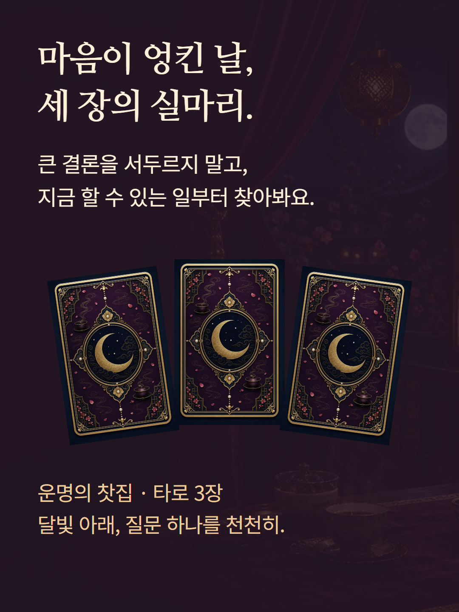
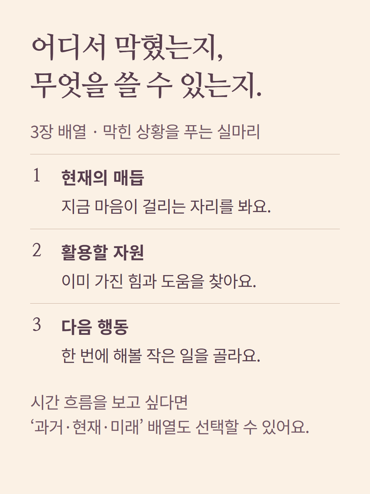
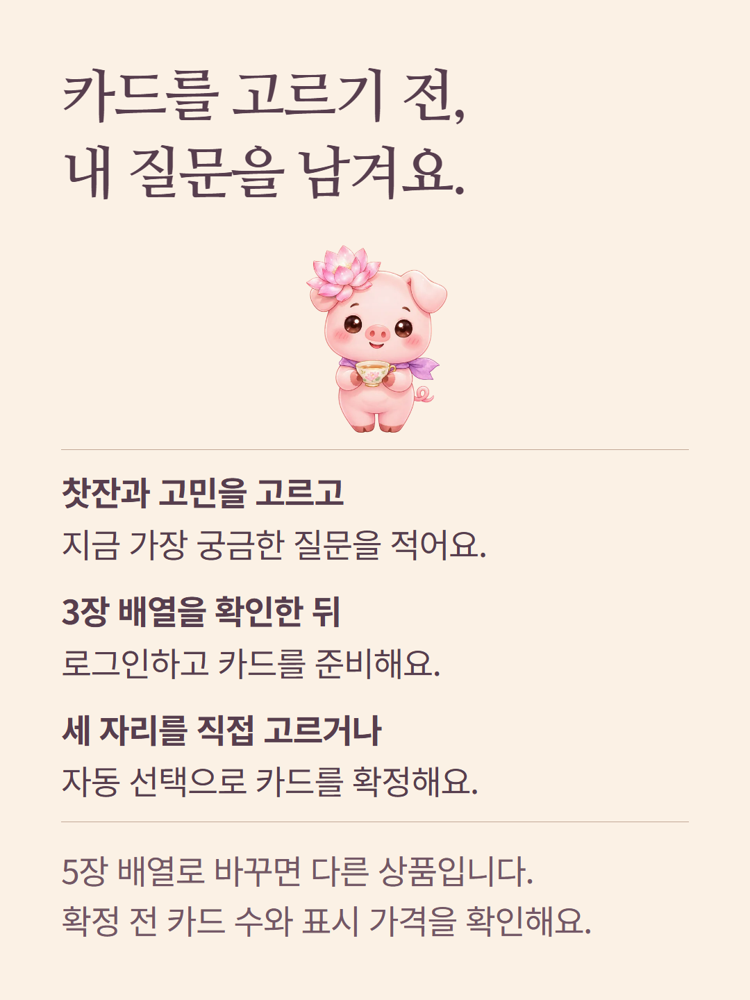
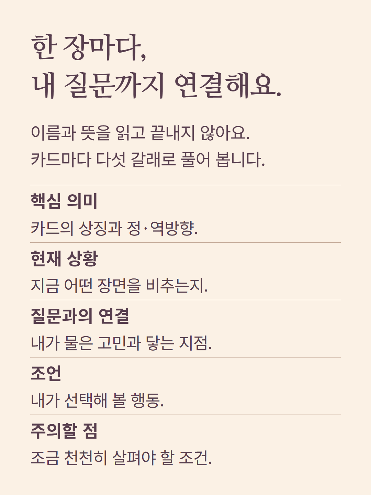
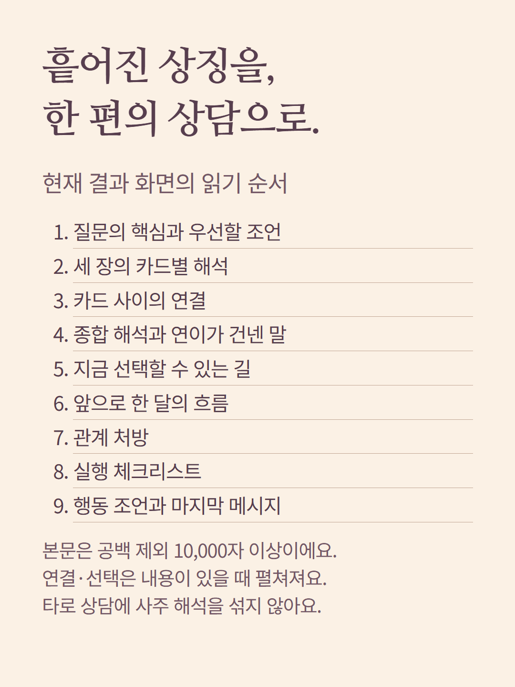
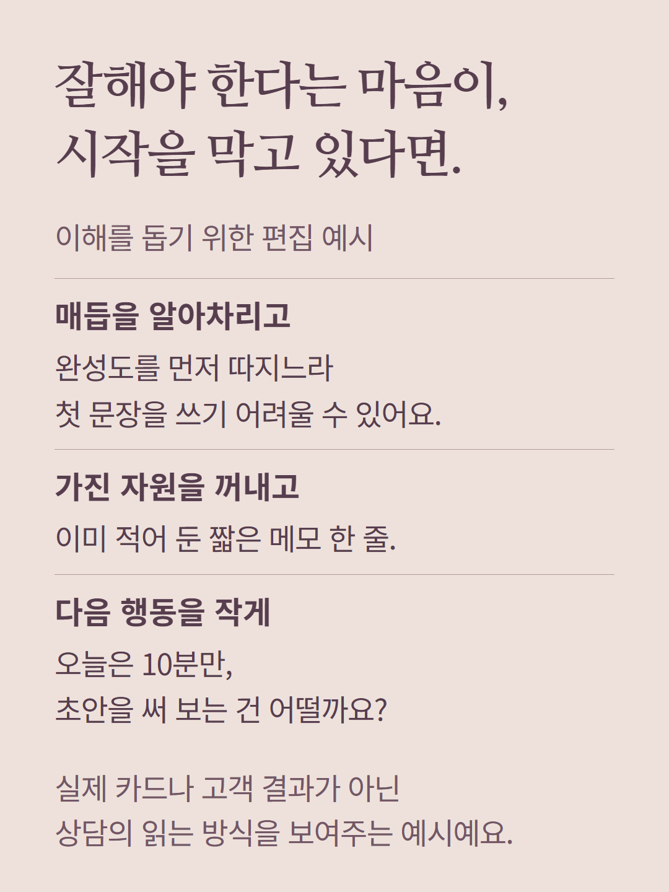
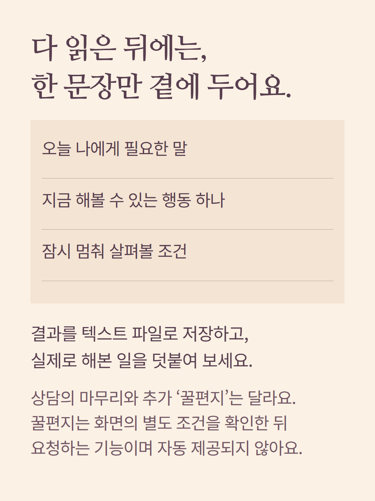
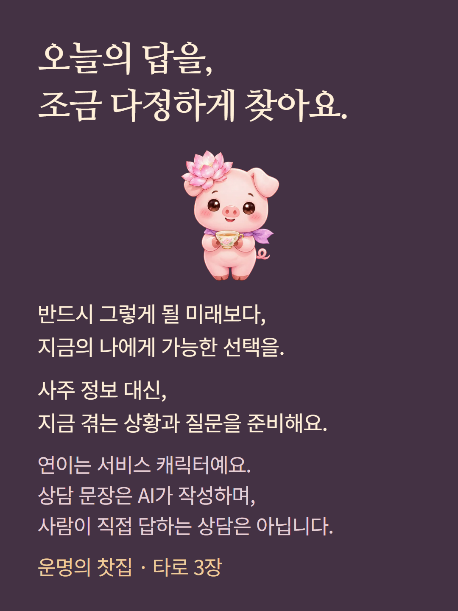

찻집의 3장 배열과 상담 구성을 안내합니다. 카드 도식은 자리 설명이며 실제 뽑힌 카드가 아닙니다. 상담 예시는 편집 예시로 실제 고객 결과가 아닙니다. 카드 간 연결·선택 시나리오·행동 항목은 받은 내용이 있을 때 표시됩니다. 사주·사주 궁합·숙요 궁합은 별도 선택 상품입니다. 꿀편지는 별도 조건이 있는 추가 기능이며 기본 상담에 자동 포함되지 않습니다. 연이는 서비스 캐릭터이고 상담 문장은 AI가 작성합니다.